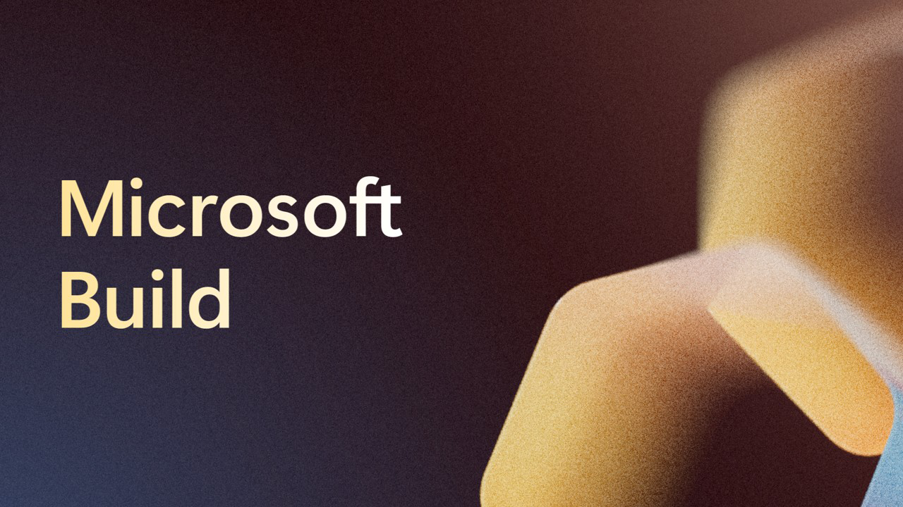

Microsoft Build 2025 - Keynotes
Microsoft Build Opening
Satya Nadella
Satya started by saying it is always good to be at Build and we are at the stage when things are happening and scaling to build out the open agentic web at scale and going from a few apps with vertically integrated platforms to a more open platform and deliver the developer tools to empower every developer on the planet and it starts with the tools we use to build software. Having the right tools to bring ideas to life and Microsoft are continually improving the tools with the Visual Studio family having over 50 million users and there are a bunch of new updates including for Visual Studio and will be making it better with support for .NET and live preview at design time and are moving to a monthly cadence for releases.
Open-source is at the core of GitHub which is the world's open developer platform and Microsoft are open-sourcing Copilot in Visual Studio Code and are integrating these capabilities into the same open-source repository for Visual Studio Code and will continue to build out GitHub Copilot with more capabilities being added all the time. You can ask an AI for answers and humans can assign tasks to AI and they can execute them, and AI and humans can assign tasks to each other. You can also migrate any on premises code to the cloud.
Microsoft also have a site reliability agent to run apps resiliently in production which can even raise GitHub issues with issues that can be resolved. GitHub Copilot will also haver a coding agent where you can assign issues to it to complete them including building new features and author tests so you can assign an issue to a Coding agent and it can work on an issue itself, it will create branch and create the resources it needs with GitHub Actions and you can see the draft PRs in the logs and it will respect any security measures and will only use MCP servers approved by developers and there will be an open and secure ecosystem with the Copilot control system where individual developers and IT can have any needed controls.
Satya Nadella & Sam Altman
Sam Altman from OpenAI joined Sayta virtually about the various form factors that developers can use such as CLIs and agents but what is the vision of how developers will use various form factors together. GitHub Codex was first developed by OpenAI in 2021, and we now have an agentic coding experience where you have a virtual teammate you can assign work to and issue many requests in parallel and create tests or fix bugs and it will only get better from here and get some pretty amazing stuff done. This allows the developer lifecycle to move faster, and Microsoft are shipping models as OpenAI release them and they will continue to evolve and get simpler to use and more reliable where it just works and people will be surprised how fast the progress will be in this direction. Developers can build agentic apps and do multi-agent orchestration to build high scale agentic applications, the rate of change is one of the most difficult thing and planning on how people will build things in the near future, but these shifts don't happen often but leaning in early and hard is the best way, the challenge is to keep moving at pace and enable developers to do more.
Satya Nadella
Developer tools are getting richer, and it is not just about one form factor but about people coming together and there is a platform opportunity for those working with Microsoft 365 Copilot and the latest update brings together chat, search, notebooks, create and agents as the UI for AI. Chat is grounded on both web and work data which is a game changer, search works across all your applications including outside Microsoft 365 and with notebooks can have heterogeneous collections of data and even get audio reviews and podcasts out of it. With create you can create PowerPoints and with agents you can get reasoning over any application or project and do things like uploading Excel spreadsheets and get an overview an analysis of this. Microsoft Teams can take all of this and multiply it and can at mention an agent in a team and the Teams AI Library now supports MCP for expanding agent skills and A2A for connecting agents to other agents and you can publish your agent to the Agent store across Microsoft Copilot and Microsoft Teams.
Copilot Studio allows you to developer your own agents with computer use for AI automation and model context protocol along with multi-agent orchestration where something like onboarding which has their own expertise and experiences can be brought together. Over a million agents have been developers that integrate in Microsoft Teams and Microsoft Copilot and there are now a new class of agent with Copilot Tuning which allows you to fine-tune agents with your company's knowledge and can do it with a set of references so it can talk, think and work like you such as generating documents that are specific to your company and you can even tune each model to specific knowhows in different industries you work with.
Miti Joshi
Miti Joshi talked about easily scaling productivity solutions with Microsoft 365 Copilot where you can call out agents such as a Researcher to tap into GitHub where you can analyse performance issues this can use the Microsoft Graph to get issues to be ingested from the GitHub API to get backlog items you care about. Copilot Studio can help build agents with little code required that can post into Teams with its own Entra Id, you can describe what the agent needs to do and can choose the model to use and then select the knowledge to ground the agent to ensure it pulls from the right sources and then have tools to trigger the agent such as when an email is received and can also use MCP servers where needed. You can use multi-agent orchestration to take on more complex work and can connect an agent to another agent such as one that carries out compliance checks to perform additional behaviour in a workflow, then can use Copilot Tuning which is a low-code way to fine tune a model. Copilot Studio can access reasoning models and have deterministic workflows and think about these agents orchestrating workflows for every role and business process and have every business application showing up as an MCP server to allow developers to think about the next level of integration using AI.
Satya Nadella
Microsoft is taking everything underneath Copilot and making it a first class platform to build your own applications and application extensions to enable AI applications that can be multi-modal stateful applications that are production ready and building a first-class server is needed and it takes more than a model to build a system and Azure AI Foundry is that complete platform for the AI age for many companies doing enterprise-level deployments. Microsoft are going further with Azure AI Foundry by supporting many different models from OpenAI, Cohere, Databricks, Deep Seek, Hugging Face and more with same day access to OpenAI models. Developers care about many things and Azure OpenAI is best in class with high reliability and great cost controls and leading security, compliance and safety and picking a model can be a bit of a chore and will now have a model router for Azure OpenAI models which offers dynamic model routing to allow applications to become multi-model.
Satya Nadella & Elon Musk
Grok from xAI will be coming to Azure AI Foundry, Elon Musk has deep vision of what AI can be and the roadmap and vision of the platform is to reason from first principles and apply the tools of physics to thinking and test conclusions against those fundamental principles.
Satya Nadella
Switching models will become easier but models are just part of the equation, but you need access to the real-time web and enterprise knowledge and need a more sophisticated query engine that is custom built for agents so can break down a complex query and run these in parallel and return the synthesised results. Foundry Agent Service allows you to create agents and use the service like a managed service for an execution environment and enables multi-agent workflows and is flexible and reliable. Microsoft provide full spectrum of compute for agent to work with container apps and functions and deploy applications as Azure Container Apps or Azure Functions and you can bring your own models to Copilot Studio to automate a workflow or build an agent. Another consideration for app servers is observability where can operate and monitor AI in production and organisations will have people and agents working together and agents will need access to identity, governance and security where agents get their own access controls and for data governance Purview is integrated and for security Defender is integrated.
Kedasha Kerr
Kedasha Kerr showed how to use Azure AI Foundry and GitHub Copilot to make development easier to build an AI travel agent, you can give your agents more grounded and smarter by adding some knowledge with files with reference data or other services but can get a long way by adding grounding with Bing Search and can also give it access to OpenAPI APIs that just work and make agents that are more reliable and less likely to hallucinate and make the agents much better with simple steps needed to improve the output and giving the agent more capabilities to allow it to do more things on your behalf such as booking hotels or even requesting leave from an internal system. You could add capabilities by using GitHub Copilot in agent mode with the most powerful models and actually do the work and get it to get the issues on GitHub by using MCP then GitHub Copilot has the context to be able to help you, for example to add some new functionality you can ask GitHub Copilot to fetch the details for a GitHub Issue and even add a rough design as context for the prompt, it will then ask for specific permissions and allow it to make changes and using the vision capabilities it can understand the sketch and then proceed to make the changes, which can stick to any styles and coding styles to make the changes.
Satya Nadella
Satya mentioned it is really exciting to see the progress and each of these platform shifts has needed an app server and building out the capabilities has helped with this as it takes scale. Microsoft want to bring the power of the app server and capability to local machine with Foundry Local for Windows and macOS including a CLI for development. Windows is the most open platform with massive scale with over a billion users and devices you can reach, and they are making it more secure and reliable. Developers are using on-device capabilities on Windows to light up more capabilities and Microsoft are taking another step with the Windows AI Foundry which is what was used for Recall and is tools to optimise inbox models and you can use open-source models or bring your own Windows ML model and tap into models you can run locally with Foundry AI and with Windows AI Foundry you can customise a local Phi Silica SLM or Small Language Model using a LoRa adapter which will revolutionise what AI looks like on the PC and for the model you have rich semantic APIs and can do hybrid RAG experiences to be contextually relevant and Windows ML allows you to deploy models without needing to do device specific tuning and there will be native support for MCP in Windows and Windows will have several built in MCP servers and there will be a registry to discover these which will be vetted for security and performance.
Divya Venkataramu
Divya Venkataramu showed how easy it to set up a new Linux Distro and deploy a web project into it using GitHub Copilot and MCP on Window. AI Components can access MCP components which can be enabled by users such as Windows Subsystem for Linux and then can connect to this with GitHub Copilot and get it to set up Fedora Linux then set up a project in the installation, there are user consent prompts that will be displayed to ensure access is granted correctly. Once you have an environment setup you can see the steps that were carried out which included it setting up the environment and required packages for the project and ran specific commands directly to carry out any actions. You can refine the project with a prompt to make the web project look like a Figma design which used an MCP server for this to pull the design details directly from Figma and implement the design accordingly in the web project. All of this achieved with just a few sentences in a simple chat interface and has potential to enhance productivity with the power of secure agent driven secure MCP functionality on Windows.
Satya Nadella
Satya said that Windows is becoming the best dev box for the AI agentic web. It was ten years ago where Windows Subsystem for Linux was developed and there was a request to open-source it and there has been a lot of changes and it is more separable and now WSL is fully open-source.
Kevin Scott
Kevin Scott in his ninth Build as CTO of Microsoft to talk to everyone, there have been so many things that have changed in the universe of technology in the past year and the thing that is exciting them right now is that the components that we have been working on has been forming the agentic web which is happening in an open way. There has been an explosion of Agents with a richer ecosystem of them that is being built, and they are being used more frequently than ever before and has more than doubled since last year. The bigger thing that is happening due to the new reasoning models is to take on extremely complicated tasks and perform incredible things but sitting on top of the agent layer is the runtime layer which is an emerging set of components, the reasoning capabilities are more powerful at the moment than is being used at the moment but can think of things that are barely possible in reasoning can be considered now as the models improve. Things that need to be built for agents is really robust agentic memory but the thing you want agents to do is to have a rich memory with high precision with recollection and you can trust them and rely upon them, TypeAgent from Microsoft is one way to tackle something to remember interactions and solve a problem once and retain the solution. Microsoft will offer these things in Azure Foundry which will become richer and richer over the next year but the thing that is super important for an Agent Web is agents being able to take actions on your behalf and need protocols such as MCP and A2A and emerging platforms to help connect agents in a reliable and interoperable way to access content, services and take action to fulfil tasks delegated to them.
Kevin Scott talked about the commitment to MCP which has taken off to fill a niche in the open web and is a simple protocol which allows you to sophisticated things and is a great foundation to layer things on top off which has been important for the web before to solve problems as things developed over time. Microsoft is doing a lot of work for their first party services to be MCP uplifted and is their protocol for agentic services and will be doing a lot of work over the months with Anthropic that enterprise issues are solved such as permissions for agents that need access to systems and support the open community, the most important thing is ubiquity where may have sharp opinions but most important thing is getting something standard. NLWeb is MCP-compatible, so with web we had HTTP then had HTML which are opinionated about the payload, where NLWeb where someone with a website or API can easily make this an agentic application to leverage the full power of large language models where every endpoint can be an MCP server and can add NLWeb experiences to websites and will be open source and Microsoft are looking for feedback on how to make it better to enable you to turn a website into an AI app. Open is so important here where simple components are composable and exposed to creativity to anyone who has an idea and the agentic web is where developers can use their imagination to make it possible.
Satya Nadella
Satya talked about the agentic web vision which gets us close to the original vision and ethos of the web and the intelligence and be more distributed across the web and NL Web democratises the creation of intelligence and distribution of intelligence and is a platform they want to create together and not be the repeat of the past and not be about the aggregator power. For any app the data tier is important, and Microsoft are building this out to enable data processing that is more efficient and capable. SQL Server 2025 will be launching soon, and Azure Cosmos DB will be integrated into Azure Foundry and will be taking this further with Azure Data Bricks and within a PostgreSQL query you can have LLM query and SQL mixed together. Microsoft Fabric is at the heart of analytics and data stack and have brought SQL to this already and will be bringing CosmosDB data to unify an entire data estate with NoSQL and SQL. Power BI will enable you to ask questions of your data and analyse across multiple PowerBI reports and will be available in Microsoft 365 Copilot.
Satya talked about the infrastructure where developers face that optimisation problem where you need to deliver AI experiences with the best cost where Microsoft are optimising the stack to bring it together and offer the lowest cost highest scale infrastructure to deliver cloud and next generation AI workloads and offer the most tokens per watt per dollar with silicon, systems and model optimisation. Azure is bringing the highest throughput for any cloud platform including enabling the latest hardware from nVidia to deliver the best intelligence to the world.
Satya Nadella & Jensen Huang
Jensen Huang from nVidia talked about launching the largest AI supercomputer on Azure last year but with new model technologies that have sped up things dramatically in just a couple of years but the reduction in costs and increase in performance is ongoing with the best of times being yet to come and bring these capabilities to developers.
Satya Nadella
Microsoft has over 70 data centre regions and have opened ten data centres in just the past few months and building a complete AI system with closed loop cooling that doesn't consume any water and data centre design is integrating improvements and connecting data centres with a 400 terrabyte per second backbone and AI applications themselves need storage and computer where efficiency is being driven including Azure Cobalt for ARM-based VMs and there is a fungible fleet of resources available for AI applications. Satya said it is also about digital resilience for responsible operations and confidential computing and maintain that complete control about how systems are governed and who has access to this, and Microsoft also offer Azure Local which offers an alternative with own infrastructure.
Satya talked about will also be real breakthroughs in science to create new compounds and molecules, and Microsoft are bringing the entire stack to science and the scientific process with Microsoft Discovery and it is build on a very powerful Graph-based knowledge engine not just for bringing back facts but also understands the nuanced knowledge of science and bringing highly specialised elements for a science agent.
John Link
John Link showed how to lead a team of agents to make a scientific discovery by reasoning over knowledge, generating hypotheses and conducting research. Microsoft Discovery can use public research and internal knowledge where you can get a summary and a comprehensive report with citation for trusted research, the goal is not just to reason over knowledge but to generate hypotheses. Generate a plan for specific research to build the right workflow where agents can use tools and models and integrate open-source and third-party solutions and use models and simulations to validate any findings and can fine a good approach and proceed to the next phase of experimentation to use the best resources and in future integrate advances in Quantum Computing and Microsoft Discovery can compress days and weeks into hours and can see how to proceed or iterate further and then actually use this to create a product such as creating a new coolant but could also be used to find other materials where the next breakthrough is yours to discover.
Satya Nadella
Satya talked about how Microsoft Discovery is being used to speed up developments. Microsoft is creating a whole new opportunity across the agentic web and across every layer of the stack with GitHub Copilot or Microsoft 365 Copilot enabling agents for every role and Azure AI Foundry to build AI agents on a robust set of rails for management, identity and security and create opportunities to fuel ambitions across the world to help solve problems wherever people are. The big winners are going to be developers who build applications not those who build platforms and it is not about the technology but what people do with it.